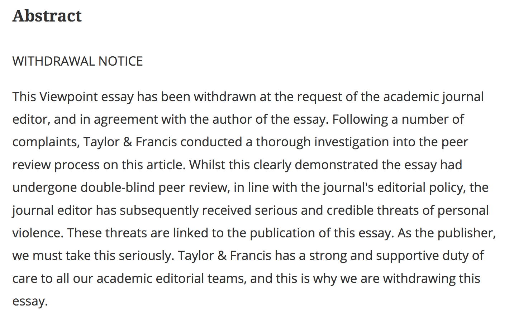

New Pro-Colonial Paper Sparks Debate About Academic Freedom
A recent paper celebrating and advocating for colonialism gets withdrawn, but is still available online. It is the kind of shoddy research that becomes fodder for intolerant beliefs.
On Sept. 8th, 2017, scholar Bruce Gilley published an article called "The Case for Colonialism " in the political science journal Third World Quarterly.
Ten days later, amidst accusations of "clickbait academia", lack of academic rigor, petitions for removal, and threats of personal violence, the publisher Taylor & Francis withdrew the article with the following statement.
15 members of the editorial board of the journal, has resigned in protest of the publication. This is an excerpt from resignation letter.
"We all subscribe to the principle of freedom of speech and the value of provocation in order to generate critical debate. However, this cannot be done by means of a piece that fails to meet academic standards of rigour and balance by ignoring all manner of violence, exploitation and harm perpetrated in the name of colonialism (and imperialism) and that causes offence and hurt and thereby clearly violates that very principle of free speech,"
The event has led to a retraction vs rebut debate discussion online. These tweets appeared one after another when "Bruce Gilley" was entered into the search bar on Twitter.
The event has led to a retraction vs rebuttal debate discussion online. These tweets appeared one after another when 'Bruce Gilley' was entered into the search bar on Twitter.